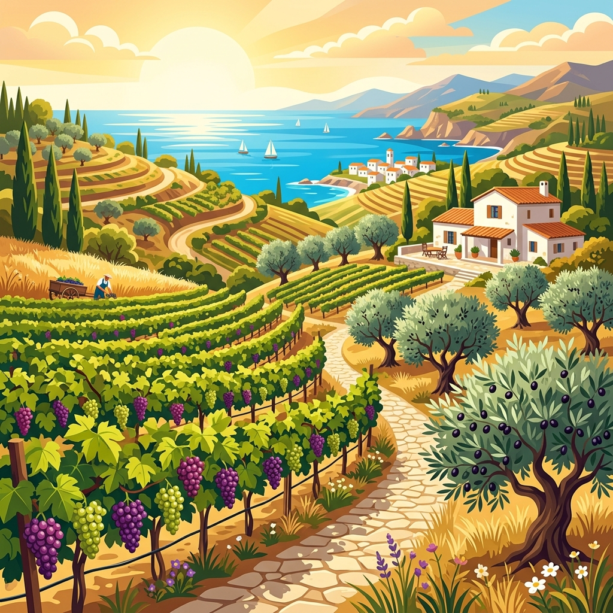

"온화한 날씨 속에서 다양한 농업과 인간 활동이 활발한 곳"

🏡 지중해성 기후의 흰 벽 가옥(산토리니)

🐄 목초지에서 방목하는 혼합 농업

🍇 올리브와 포도를 가꾸는 수목 농업
📌 기후 특징
- 사계절 사계절 변화 뚜렷 ➡️ 계절별 다양한 생활 양식 발달
- 기온 및 강수 연중 온화, 적당한 강수량 ➡️ 인간 거주 최적, 인구 밀집 및 산업 발달
- 주요 지역 중위도 지역 (유럽 주요국, 동아시아, 미국 일부 등)
🏡 주민 생활 모습(의·식·주)
- 의(衣)생활 사계절 변화에 대응 ➡️ 얇은 옷부터 두꺼운 옷까지 다양하게 착용
-
식(食)생활
• 서안 해양성 기후: 혼합 농업 발달 (곡물 재배 + 가축 사육 병행)
• 지중해성 기후: 여름철 고온 건조 극복 ➡️ 수목 농업 발달 (올리브, 오렌지, 포도 등) - 주(住)생활 • 지중해성 기후: 여름철 강한 열기 차단 ➡️ 흰색 벽(햇빛 반사), 두꺼운 벽, 작은 창문
"길고 추운 겨울과 넓은 침엽수림(타이가)이 펼쳐진 곳"

🌌 오로라 아래 아늑한 통나무집

🌲 눈 덮인 울창한 타이가(침엽수림)

🪵 침엽수림을 활용한 임업(목재 생산)
📌 기후 특징
- 기온 변화 길고 추운 겨울, 짧고 따뜻한 여름 ➡️ 연교차 매우 큼
- 식생 북반구 고위도 넓은 침엽수림 지대인 타이가(Taiga) 분포
- 주요 지역 시베리아, 캐나다, 스칸디나비아반도 등
🏡 주민 생활 모습(의·식·주)
- 의(衣)생활 혹한 극복 ➡️ 동물 가죽 및 털로 만든 두꺼운 방한복 착용
- 식(食)생활 농업 불리 ➡️ 풍부한 침엽수림 자원을 활용한 임업(목재·펄프 생산) 및 수렵 발달
-
주(住)생활
• 건축 재료: 주변 침엽수림 자원을 쉽게 조달하여 통나무집 건축
• 구조 특징: 폭설로 인한 지붕 붕괴 방지 ➡️ 가파른 경사 지붕 설계
"얼어붙은 땅과 빙하, 생존을 위한 독특한 지혜가 담긴 곳"

🛖 침하를 막는 고상 가옥과 이글루

🦌 툰드라 지대의 순록 유목 풍경

🧊 빙하와 오로라가 펼쳐진 북극해
📌 기후 특징
- 극심한 추위 최난월 평균 기온 10℃ 미만 ➡️ 농작물 재배 절대 불가능
- 토양층 여름에 일시적으로 녹는 활동층 + 연중 얼어 있는 영구동토층 구성
- 주요 지역 북극해 연안, 그린란드, 남극 대륙 등
🏡 주민 생활 모습(의·식·주)
- 의(衣)생활 매서운 강풍과 혹한 극복 ➡️ 털가죽 옷 여러 겹 겹쳐 입기
- 식(食)생활 농업 불가능 ➡️ 전통적인 순록 유목, 수렵(바다표범, 물고기 등) 및 육식 중심
-
주(住)생활
• 고상 가옥: 여름철 활동층 융해로 인한 지반 침하 및 건물 뒤틀림 방지 ➡️ 지지대를 영구동토층에 단단히 박고 집을 지면에서 띄워 지음
• 임시 거처: 사냥 이동 시 얼음 벽돌을 활용한 이글루 사용